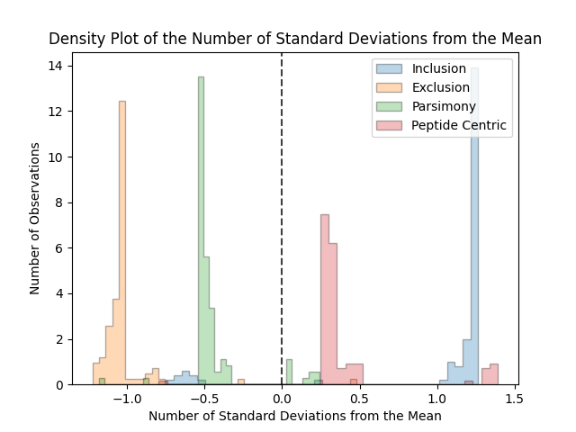

Running Py Protein Inference
Running the Main Py Protein Inference Method
Running Via Command Line
Upon proper installation of the package, the command line tool should be installed and should be available from any location on the system. The command line tool can be called as follows:
protein_inference_cli.py --help
This will return the help prompt for the tool.
If this does not work download protein_inference_cli.py from our repository and write the full path to the script while also calling python:
python /path/to/directory/pyproteininference/scripts/protein_inference_cli.py --help
Command line options are as follows:
cli$ python protein_inference_cli.py --help
usage: protein_inference_cli.py [-h] [-t FILE [FILE ...]] [-d FILE [FILE ...]]
[-f FILE [FILE ...]] [-o DIR] [-l FILE]
[-a DIR] [-b DIR] [-c DIR] [-db FILE]
[-y FILE] [-p] [-i]
Protein Inference
optional arguments:
-h, --help show this help message and exit
-t FILE [FILE ...], --target FILE [FILE ...]
Input target psm output from percolator. Can either
input one file or a list of files.
-d FILE [FILE ...], --decoy FILE [FILE ...]
Input decoy psm output from percolator. Can either
input one file or a list of files.
-f FILE [FILE ...], --combined_files FILE [FILE ...]
Input combined psm search results in idXML, mzIdentML, pepXML, or
tab delimited format. This should contain Target and Decoy PSMS. "
Can either input one file or a list of files.
-o DIR, --output DIR Result Directory to write to - the name of file will
be determined by parameters selected and tag
parameter. If this option is not set, will write
results to current working directory.
-l FILE, --output_filename FILE
Filename to write results to. Can be left blank. If
this flag is left blank the filename will be
automatically generated. If set this flag will
override -o.
-a DIR, --target_directory DIR
Directory that contains either .txt or .tsv input
target psm data. Make sure the directory ONLY contains
result files.
-b DIR, --decoy_directory DIR
Directory that contains either .txt or .tsv input
decoy psm data. Make sure the directory ONLY contains
result files.
-c DIR, --combined_directory DIR
Directory that contains either .txt or .tsv input data
with targets/decoys combined. Make sure the directory
ONLY contains result files.
-db FILE, --database FILE
Path to the fasta formatted database used in the MS
search. This is optional. If not set, will use the
proteins only in the input files.
-y FILE, --yaml_params FILE
Path to a Protein Inference Yaml Parameter File. If
this is not set, default parameters will be used.
-p, --skip_append_alt
Advanced usage only. If this flag is set, will skip
adding alternative proteins to each PSM from the
database digest. If this flag is not set, the
peptide/protein mapping will be taken from database
digest and appended to the mapping present in the
input files.
-i, --id_splitting Advanced usage only. If set this flag will split
protein identifiers.If not set, this flag will not
split protein identifiers.Sometimes the fasta database
protein IDs are formatted as: 'sp|ARAF_HUMAN|P10398'.
While protein IDs in the input files are formatted as
'ARAF_HUMAN|P10398'. Setting This flag will split off
the front 'sp|' or 'tr|' from the database protein
identifiers.
The following combinations of input are allowed and at least one combination is required:
-t -dPath to input target (-t) and decoy (-d) files. This can be one target and one decoy file or multiple files separated by spaces (" "). See here for information on target/decoy input files.-a -bPath to input target (-a) and decoy (-b) directories that contain target and decoy files. This is one directory each and all .txt and .tsv files will be read in as input.-fPath to input combined target/decoy (-f) files. This can be one file or multiple files separated by spaces (" "). Use this option if your input is .mzIdentML, idXML, or pepXML.-cPath to input combined target/decoy (-c) directory that contain combined target/decoy files. This is one directory each and all .txt and .tsv files will be read in as input.
Any other combinations will result in an Error raised.
Optional flags
-dbPath to Fasta Database file.-yPath to Protein Inference Yaml Parameter file. (If this is not supplied default parameters will be used).-oPath to the output directory, if this is left blank files will be written to the current working directory.-lPath to the output filename, if this is left blank a filename will be automatically generated and will be written to directory as set in-o. Will override-oflag if set.
Advanced usage flags
-pThis flag is a True/False on whether to skip appending alternative proteins from the Fasta database digestion. If this flag is left blank, it will not skip appending alternative proteins (recommended).-iTrue/False on whether to split the IDs in the Fasta database file. If this is left blank, it will not split IDs in the Fasta database file (recommended).
You can run the tool as follows with separate target and decoy files:
protein_inference_cli.py \
-t /path/to/target/file.txt \
-d /path/to/decoy/file.txt \
-db /path/to/database/file.fasta \
-y /path/to/parameter/file.yaml \
-o /path/to/output/directory/
Or from combined files like an mzIdentML file:
protein_inference_cli.py \
-f /path/to/target/file.mzid \
-db /path/to/database/file.fasta \
-y /path/to/parameter/file.yaml \
-o /path/to/output/directory/
Running with multiple input target/decoy files:
protein_inference_cli.py \
-t /path/to/target/file1.txt /path/to/target/file2.txt \
-d /path/to/decoy/file1.txt /path/to/decoy/file2.txt \
-db /path/to/database/file.fasta \
-y /path/to/parameter/file.yaml \
-o /path/to/output/directory/
Or from multiple mzIdentML / idXML / pepXML files:
protein_inference_cli.py \
-f /path/to/target/file1.mzid /path/to/target/file2.mzid \
-db /path/to/database/file.fasta \
-y /path/to/parameter/file.yaml \
-o /path/to/output/directory/
Running Within Python
To run within a python console please see the following example:
from pyproteininference.pipeline import ProteinInferencePipeline
yaml_params = "/path/to/yaml/params.yaml"
database = "/path/to/database/file.fasta"
### target_files can either be a list of files or one file
target_files = ["/path/to/target1.txt","/path/to/target2.txt"]
### decoy_files can either be a list of files or one file
decoy_files = ["/path/to/decoy1.txt","/path/to/decoy2.txt"]
output_directory_name = "/path/to/output/directory/"
pipeline = ProteinInferencePipeline(parameter_file=yaml_params,
database_file=database,
target_files=target_files,
decoy_files=decoy_files,
combined_files=None,
output_directory=output_directory_name)
# Calling .execute() will initiate the pipeline with the given data
pipeline.execute()
Or running mzIdentML files within python:
from pyproteininference.pipeline import ProteinInferencePipeline
yaml_params = "/path/to/yaml/params.yaml"
database = "/path/to/database/file.fasta"
### target_files can either be a list of files or one file
mzid_files = ["/path/to/file1.mzid","/path/to/file2.mzid"]
### decoy_files can either be a list of files or one file
output_directory_name = "/path/to/output/directory/"
pipeline = ProteinInferencePipeline(parameter_file=yaml_params,
database_file=database,
target_files=None,
decoy_files=None,
combined_files=mzid_files,
output_directory=output_directory_name)
# Calling .execute() will initiate the pipeline with the given data
pipeline.execute()
Running the Heuristic Method
NOTE: The Heuristic Method is experimental and has not be extensively tested on multiple datasets yet. Check back for updates on this tool.
Py Protein Inference also has a built-in Heuristic that runs through four inference methods (Inclusion, Exclusion, Parsimony, and Peptide Centric) and selects a recommended method for your given dataset.
By default, all four result files will be written, and the optimal method will be highlighted to the user.
The Heuristic method also outputs a density plot that showcases all the inference methods compared to one another to gain further insight. For more information on the Heuristic Method see the Heuristic algorithm section.
Running the Heuristic Method via the Command Line
python protein_inference_heuristic_cli.py --help
This will return the help prompt for the tool.
If this does not work download protein_inference_heuristic_cli.py from the repository and write the full path to the script while also calling python.
python /path/to/directory/pyproteininference/scripts/protein_inference_heuristic_cli.py --help
Command line options are as follows:
cli$ python protein_inference_heuristic_cli.py --help
usage: protein_inference_heuristic_cli.py [-h] [-t FILE [FILE ...]]
[-d FILE [FILE ...]]
[-f FILE [FILE ...]] [-o DIR]
[-l FILE] [-a DIR] [-b DIR] [-c DIR]
[-db FILE] [-y FILE] [-p] [-i]
[-r FILE] [-m FLOAT] [-u STR]
Protein Inference Heuristic
optional arguments:
-h, --help show this help message and exit
-t FILE [FILE ...], --target FILE [FILE ...]
Input target psm output from percolator. Can either
input one file or a list of files.
-d FILE [FILE ...], --decoy FILE [FILE ...]
Input decoy psm output from percolator. Can either
input one file or a list of files.
-f FILE [FILE ...], --combined_files FILE [FILE ...]
Input combined psm output from percolator. This should
contain Target and Decoy PSMS. Can either input one
file or a list of files.
-o DIR, --output DIR Result Directory to write to - the name of file will
be determined by parameters selected and tag
parameter. If this option is not set, will write
results to current working directory.
-l FILE, --output_filename FILE
Filename to write results to. Can be left blank. If
this flag is left blank the filename will be
automatically generated. If set this flag will
override -o.
-a DIR, --target_directory DIR
Directory that contains either .txt or .tsv input
target psm data. Make sure the directory ONLY contains
result files.
-b DIR, --decoy_directory DIR
Directory that contains either .txt or .tsv input
decoy psm data. Make sure the directory ONLY contains.
result files.
-c DIR, --combined_directory DIR
Directory that contains either .txt or .tsv input data
with targets/decoys combined. Make sure the directory
ONLY contains result files.
-db FILE, --database FILE
Path to the fasta formatted database used in the MS
search. This is optional. If not set, will use the
proteins only in the input files.
-y FILE, --yaml_params FILE
Path to a Protein Inference Yaml Parameter File. If
this is not set, default parameters will be used.
-p, --skip_append_alt
Advanced usage only. If this flag is set, will skip
adding alternative proteins to each PSM from the
database digest. If this flag is not set, the
peptide/protein mapping will be taken from database
digest and appended to the mapping present in the
input files.
-i, --id_splitting Advanced usage only. If set this flag will split
protein identifiers.If not set, this flag will not
split protein identifiers.Sometimes the fasta database
protein IDs are formatted as: 'sp|ARAF_HUMAN|P10398'.
While protein IDs in the input files are formatted as
'ARAF_HUMAN|P10398'. Setting This flag will split off
the front 'sp|' or 'tr|' from the database protein
identifiers.
-r FILE, --pdf_filename FILE
PDF Filepath to write the Heuristic plot to after
Heuristic Scoring. If not set, writes the file with
filename heuristic_plot.pdf to directory set in -o. If -o is
not set, will write the file to current working
directory.
-m FLOAT, --fdr_threshold FLOAT
The FDR threshold to use in the Heuristic Method.
Defaults to 0.05 if not set.
-u STR, --output_type STR
The type of output to be written. Can either be 'all'
or 'optimal'. If set to 'all' will output all
inference results. If set to 'optimal' will output
only the result selected by the heuristic method. If
left blank this will default to 'all'.
Input options are the same as the standard protein_inference_cli.py with the addition of three optional inputs:
1. -r This is a filepath that will have a density plot written to it after the heuristic method has been run. If this is left blank, it will write the plot into the standard output directory with the name heuristic_plot.pdf
2. -m The FDR threshold to use in the Heuristic Method. The method will use values from 0 to the FDR threshold. If this value is left blank, it will be set to 0.05
3. -u This is the type of output to be written after the heuristic method is complete. Will either output all results or the optimal results. If all is selected, the optimal results will have the string "optimal_method" spliced into the filename.
You can run the tool as follows:
protein_inference_heuristic_cli.py \
-t /path/to/target/file.txt \
-d /path/to/decoy/file.txt \
-db /path/to/database/file.fasta \
-y /path/to/parameter/file.yaml \
-o /path/to/output/directory/ \
-r /path/to/pdf/file.pdf \
-m 0.05
Running with multiple input target/decoy files:
protein_inference_heuristic_cli.py \
-t /path/to/target/file1.txt /path/to/target/file2.txt \
-d /path/to/decoy/file1.txt /path/to/decoy/file2.txt \
-db /path/to/database/file.fasta \
-y /path/to/parameter/file.yaml \
-o /path/to/output/directory/ \
-r /path/to/pdf/file.pdf \
-m 0.05
Running the Heuristic Method via Python
To run within a python console please see the following example:
from pyproteininference.heuristic import HeuristicPipeline
yaml_params = "/path/to/yaml/params.yaml"
database = "/path/to/database/file.fasta"
### target_files can either be a list of files or one file
target_files = ["/path/to/target1.txt","/path/to/target2.txt"]
### decoy_files can either be a list of files or one file
decoy_files = ["/path/to/decoy1.txt","/path/to/decoy2.txt"]
output_directory_name = "/path/to/output/directory/"
pdf_filename = "/path/to/output/directory/heuristic_plot.pdf"
hp = HeuristicPipeline(parameter_file=yaml_params,
database_file=database,
target_files=target_files,
decoy_files=decoy_files,
combined_files=None,
output_directory=output_directory_name,
pdf_filename=pdf_filename,
output_type="all")
# Calling .execute() will initiate the heuristic pipeline with the given data
# The suggested method will be output in the console and the suggested method results will be written into the output_directory
hp.execute(fdr_threshold=0.05)
# The optimal inference method and density plot can be generated separately as well with the following to specify thresholds directly:
hp.determine_optimal_inference_method(false_discovery_rate_threshold=0.05,
upper_empirical_threshold=1,
lower_empirical_threshold=.5,
pdf_filename=None)
Heuristic Output Example
Console Output
Console Output is as follows and indicates the recommended method at the end:
2022-05-12 17:28:38,413 - pyproteininference.heuristic - INFO - Heuristic Scores
2022-05-12 17:28:38,413 - pyproteininference.heuristic - INFO - {'inclusion': 1.2145313335009247, 'exclusion': 1.053616485888155, 'parsimony': 0.5416878942666304, 'peptide_centric': 0.24465822235367252}
2022-05-12 17:28:38,413 - pyproteininference.heuristic - INFO - Either parsimony 0.5416878942666304 or peptide centric 0.24465822235367252 pass empirical threshold 0.5. Selecting the best method of the two.
2022-05-12 17:28:38,413 - pyproteininference.heuristic - INFO - Method peptide_centric selected with the heuristic algorithm
Heuristic Density Plot Output
Below is an example of a Heuristic Density plot. The plot indicates the distribution of the number of standard deviations from the mean (of identified proteins at a specified FDR) for each inference method for a range of FDRs from 0 to the false discovery rate threshold (100 fdrs are incrementally selected in the range [0, fdr threshold]) In general, the closer that the peak of a distribution is to 0 the more likely the associated method is to be selected as the recommended method. For more information on the specifics of the Heuristic Algorithm see Heuristic Algorithm Description
